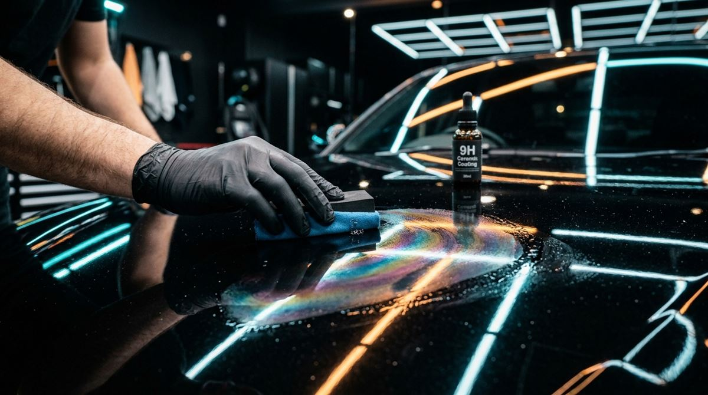

Хит
Керамическое зеркало
Максимальный визуальный эффект: убираем все дефекты лака, запечатываем керамикой 9H в 2 слоя и добавляем антидождь на все стекла. Машина выглядит лучше, чем в день покупки, и моется сама. Пакет выгоднее и отдельных услуг, и ручного комплекса.
Выгода отдельно / против ручного комплекса: 15 000 ₽ / 4 575 ₽
54 500 ₽~25 ч